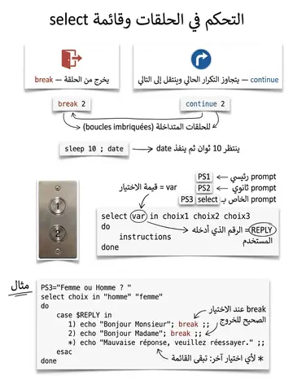

select, options du shell & exec
select وخيارات الشيل وexec
الشرح بالعربية
select x in a b c; do ...; done يعرض قائمة مرقمة ويضع اختيار المستخدم في x (وREPLY). من خيارات set: -o vi/emacs، -x لتتبع التنفيذ، -v لعرض الأوامر، -n لفحص الصياغة دون تنفيذ. exec command يستبدل الشيل الحالي دون إنشاء عملية جديدة.
Illustrations de la leçon
1 planche · cliquez pour agrandir
Contenu du cours
Pages 402–406 · texte intégral du support
Select :
La commande select est utilisée pour afficher un menu permettant à l'utilisateur de choisir une option parmi plusieurs.
select var in selection1 selection2 ... selectionN do instructions done
Chaque option du menu est affichée précédée par son numéro d’ordre. La sélection de l'utilisateur est stockée dans la variable d'environnement REPLY, tandis que la valeur sélectionnée est assignée à la variable var.
$PS1 :Définit le prompt principal du shell. Par défaut, sa valeur est $ (ou # pour l'utilisateur root). Vous pouvez personnaliser $PS1 pour afficher des informations comme l'heure, le nom de l'utilisateur ou le répertoire courant.
$PS2 :Définit le prompt secondaire, affiché lorsque l'utilisateur continue une saisie (exemple : lorsque vous utilisez une commande sur plusieurs lignes). Par défaut, sa valeur est >.
$PS3 :Définit le prompt pour la commande select. Par défaut, aucune valeur spécifique n'est définie, mais vous pouvez personnaliser $PS3 pour afficher un message contextuel dans les menus créés par select.
STRUCTURES DE CONTRÔLE
Select :
Écrire un script qui affiche « Bonjour Madame » ou « Bonjour Monsieur » selon si l'utilisateur indique être une femme ou un homme.
echo "Êtes-vous un homme ou une femme ?"
PS3="Femme ou Homme ? "
select choix in "homme" "femme"; do case $REPLY in
echo "Bonjour Monsieur"; break ;;
echo "Bonjour Madame"; break ;;
*) echo "Mauvaise réponse, veuillez réessayer." ;;
esac done
Affichage :
Homme
femme
Femme ou Homme ?
STRUCTURES DE CONTRÔLE
#!/bin/bash# Afficher un message pour sélectionner un type de terminal echo "Select your terminal type:"
# Personnalisation du prompt pour `select`
PS3="terminal? "
# Menu avec les types de terminaux disponibles select term in "Givalt VT100" "Tsoris VT220" "Shande VT320" "Vey VT520"; do case $REPLY in
TERM="gl35a";; # Si l'utilisateur choisit 1, TERM est défini à "gl35a"
TERM="t2000";; # Si l'utilisateur choisit 2, TERM est défini à "t2000"
TERM="s531";; # Si l'utilisateur choisit 3, TERM est défini à "s531"
TERM="vt99";; # Si l'utilisateur choisit 4, TERM est défini à "vt99"
*) echo "Invalid choice."; continue ;; # Toute autre saisie affiche "Invalid"
esac
# Si une sélection valide est faite, afficher le type de terminal choisi if [[ -n $TERM ]]; then echo "TERM is $TERM"
break # Quitter la boucle fi done
STRUCTURES DE CONTRÔLE
A l’intérieur de ces différentes structures, il est important que l’utilisateur puisse fixer lui-même et selon ses propres critères la sortie de boucles.
La commande: continue [n] permet de sauter à la fin de la boucle et de recommencer une nouvelle boucle.
La commande: break [n] provoque, quand à elle la sortie de la boucle en cours et passe à l’instruction qui suit la boucle.
Dans les deux cas, l’entier n permet d’indiquer que l’action se porte sur une boucle externe.
Par exemple, break 2 sortira de la boucle qui englobe la boucle dans laquelle cette instruction est écrite.
INSTRUCTIONS LIÉES AUX BOUCLES
La commande exec exécute la commande à la place du processus (shell) courant :
exec [commande [arg ...]]
Il n’y a pas de création de nouveau processus
arg, . . . deviennent les arguments de commande
si commande n’existe pas, le shell termine avec un code de retour
Exemple:
exec vi myfile exec 1>/tmp/out